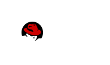

OpenSource
Communities, Werkzeuge, Methoden
und was noch dazu gehört
Dominik Perpeet
Software Engineer bei Red Hat
vorher Fraunhofer IOSB
Agenda
- Open Source
- Wie funktioniert das?
- Was kann ich tun?
Open Source
hat gewonnen
Offenheit ist Standard
Open Source
Open Source Methoden
Berechnen, Daten, Verbinden
Open Source folgt nicht mehr nur
Open Source führt Innovation an
Open Source ist schnell und breitgefächert
Red Hat ist ein Katalysator
Verfügbare Kapazität optimal nutzen
Red Hat Enterprise Linux, Virtualisierung, JBoss
Software Defined Computing
Anwendungen, Machinen und Netzwerke optimal verbinden
Cloud Forms, Satellite, OpenStack
Software Defined Networking
Daten optimal speichern, nutzen und finden
Red Hat Storage, Message Queue
Software Defined Storage
Open Source
Mehr als eine Person, eine Firma
Open Source ist Qualität
8 von 10 Firmen wählen Open Source wegen der Qualität.
Quelle: Blackduck Future of Open Source Survey 2014
Es werden immer mehr
61% aller Unternehmen übernehmen Open Source Methoden und leisten Beiträge in offenen Projekten.
Quelle: Blackduck Future of Open Source Survey 2015
Upstream Community für Red Hat OpenShift
Kern: Docker, Kubernetes
Sichere, verlässliche Plattform für Container
Es werden immer mehr
Warum interagieren Firmen mit Open Source Communities? #2 Antwort:
Talentierte Mitarbeiter bekommen und halten
Quelle: Blackduck Future of Open Source Survey 2014
Wie funktioniert das?
Eins der größten Probleme:
Ego!
Kommunikation
Nur Sichtbares existiert
Diskussion
Sachliche Diskussion auch bei Emotionen
Arbeitstechniken
Werkzeuge
Verantwortung
Lebensdauer eines Projekts
Bequemlichkeit
Github oder Foundations?
versus

Github!
Social coding?
Software Foundations..
ASF, Eclipse, Node, FSF, etc
Was kann ich tun?